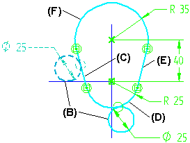
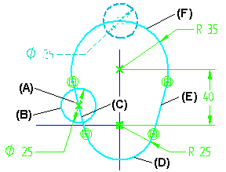

Working with profile groups
You can use the Connect or Tangent commands to define a profile group. A profile group is an endpoint connected series of lines, arcs, elliptical arcs, or open b-spline curves that behave as one element with respect to the geometric relationship that defines the profile group.
A profile group exists only within the context of the tangent or connect relationship that defines the group. Profile groups can be open or closed, but cannot be disjoint.
A profile group allows you to define a single relationship that applies to more than one element. For example, you can apply a tangent relationship (A) between circle (B), and a series of endpoint connected elements (C), (D), (E), and (F).

When you move circle (B) using the Select tool or by editing a relationship that controls the position of the circle (B), it remains tangent to elements (C) through (F).

Defining profile groups
You define a profile group by holding the SHIFT key within the Tangent or Connect commands, then select the elements you want to be in the profile group. For example, to apply a tangent relationship to the profile group shown previously, first select circle (B), then hold the SHIFT key and select elements (C), (D), (E), and (F).
When you define a profile group using a connect relationship, a single degree of freedom connect relationship (A) is applied. For example, you can connect the center of circle (B) to elements (C), (D), (E), and (F). When you move circle (B), its center remains connected to elements (C) through (F).

You can also apply a connect or tangent relationship to two groups of elements by pressing the SHIFT key while selecting the first group of elements, then release the SHIFT key and press the SHIFT key again while selecting a second group of elements.
After you define a profile group, you cannot add more elements to it. If you want to add another element, you must first delete the relationship that defines the profile group, add the elements you want, then redefine the profile group by reapplying a tangent or connect relationship.
If you delete an element from a profile group and the group remains valid, the group remains in place. If you recompute the group and validation fails, the relationship that defines the group is dropped.